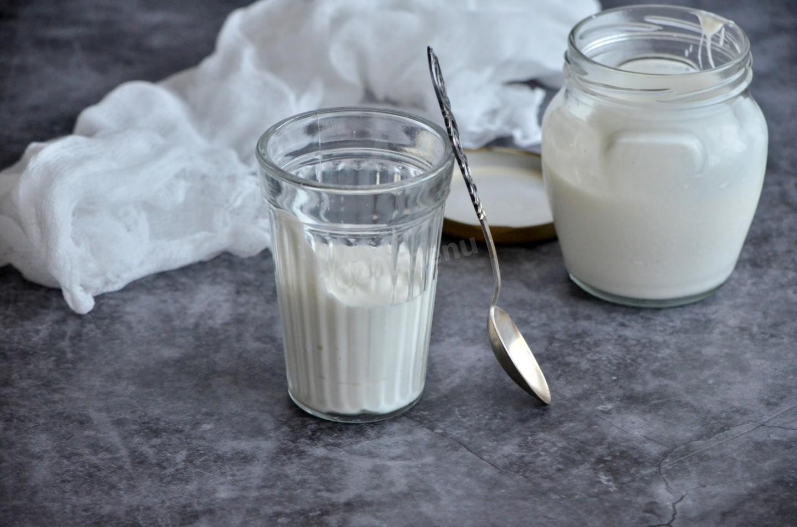

Recipes homemade sour cream

Description
Incredibly tasty, natural, with only two ingredients. Homemade sour cream from milk is very easy to make. It is healthier and tastier than store-bought. In addition, sour cream is absorbed much better than milk and even cheese. Use ready-made sour cream for dressing salads, soups, and also as a separate dish
Ingredients
- Milk - 1 liters
- Kefir - 4 tablespoons
Steps
- How to make homemade sour cream from milk? Prepare the necessary ingredients. It is best to take whole homemade cow's milk, but if you don't have that, store-bought milk will do. Just take milk with the highest percentage of fat. You can also make milk fatter by adding butter to it. To do this, heat the milk and put the butter in it. When the pieces of butter melt in the warm milk, beat it for a few minutes with a blender
- Now the milk needs to be boiled, and then left to cool to a temperature of about forty degrees. It should be pleasantly warm to the touch
- Remove the foam and pour kefir into the milk. Mix everything well with a whisk
- Cover the pan with milk with a lid, wrap it in a towel or blanket and leave it like that for 7 hours
- You should end up with thick sour milk like this
- Place a colander over the pan and line it with either cheesecloth folded in several layers or a linen napkin
- Pour the resulting sour milk into the colander, cover with a lid and put in the refrigerator for 8 hours. No need to put a weight. To help the whey drain better, you can stir the mass from time to time
- You should end up with a mass like this
- Pour the future sour cream into a bowl and mix it well with a whisk. You can also beat it with an immersion blender. If the consistency seems thick, add a little milk when whipping. Homemade sour cream from milk is ready. Pour it into a glass container and store it in the refrigerator. Enjoy!
All Recipes